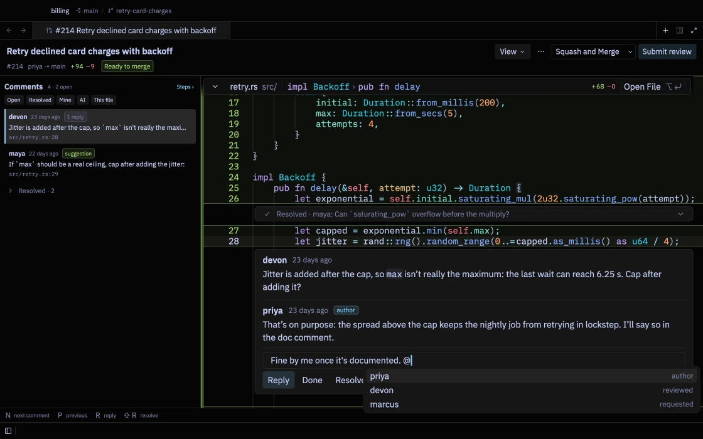
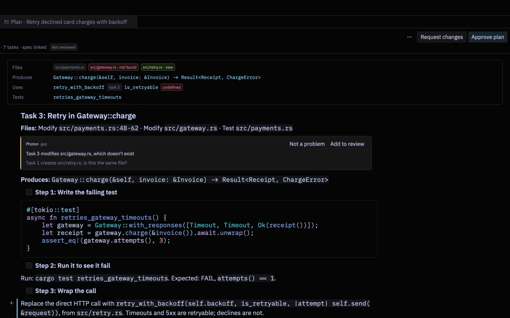

Terminal, editor and code review. One fast app.
Photon is where you run commands, write code and check changes: your own, your teammates' and your AI agents'. Native, open source, and quiet when you aren't using it.
$ brew tap heapworks-in/photon && brew install photon
Finished `dev` profile in 3.14s
charge_invoice holds the HTTP request. Give the API handler a shorter budget.max isn't really the maximum. Cap after adding it?Watch it work: a test run becomes a block you can act on, a pull request is reviewed step by step with an AI draft that checked itself, and the callers of a function are drawn as a map.
~ terminal
A terminal that remembers what happened.
Every command and its output become one block, so you never scroll through noise to find what you need.

Test runs you can act on
cargo test, pytest and jest are summarised as passed and failed. Rerun only the failures; F8 jumps to each error.
Output as a table
JSON, kubectl get and docker ps output open as a sortable table, or copy as CSV.
git status, in place
Stage, diff or discard each file right where git status listed it.
Input like an editor
Select with the mouse, undo, write over several lines. ↑ walks history; ctrl R searches it across projects.
Paths that open
⌘-click src/main.rs:42 in any output to open that line beside the terminal.
Told when it's done
A long build that finishes in the background sends a notification; click it to land on the block.
~ code review
Read a pull request the way you'd explain it.
Photon splits a change into steps, shows what each one touches, and lets you comment, check and merge without leaving the editor.


An AI reviewer that checks itself
Your own agent reviews the pull request, re-checks every finding against the code and drops what it can't confirm. Findings arrive as drafts marked must fix, should fix or nice to have.
Merge what you reviewed
The header says whether the pull request can merge and why not. Merge asks first and refuses if the author pushed after you loaded it.
Each change with its surroundings
The functions a change calls and the code that calls it appear beside the diff; callers the pull request forgot are flagged.
Only what you haven't reviewed
After the author pushes again, changed steps say so and one click shows just the new diff.
Your team's checklist
Checklists in settings apply by path, so database, CI and dependency changes get the questions that matter.
Run it locally, safely
A pull request opens in its own copy of the repository, never runs git hooks, and stays restricted until you trust it.
~ docs and plans
Review a plan before anyone builds it.
A plan from Superpowers, Spec Kit, Kiro or OpenSpec opens as steps. Photon lists what each task claims to touch, finds the gaps, and sends your verdict back to the agent that wrote it.

Gaps found for you
A file no task creates, a function nobody defines, code with no test, two tasks on one file, a requirement with no task. Each shown with its evidence.
Markdown opens for reading
⌘ ⇧ V flips the tab to the source; a double-click edits the spot you're reading. Diagrams and images open full size.
Excalidraw, built in and offline
Draw in .excalidraw files with the hand-drawn fonts and libraries included; save as .excalidraw.svg to show the drawing in your docs.
~ agents
Your agents, on your plans, under review.
Photon doesn't sell an AI subscription. It runs Claude Code, Codex or any ACP agent as you, and makes every turn easy to check and undo.
max is a real ceiling, and add a test for it.src/retry.rsEdited src/retry.rsEdited tests/retry.rsRan cargo test retry · 3 passedReview every turn
Photon snapshots your files before each turn. Open a turn's diff from its file chips, or put everything back with Revert Turn.
Ask about a selection
Select code and press ⌥ T to start a thread about exactly those lines.
Queue edits, apply once
Press ⌥ E on a selection to note a change; Apply All sends them together.
~ understand code
See who calls what, even on a bad day.
Follow calls through a trail or a map, jump to definitions without a language server, and get a plain answer when one won't start.

Call Trails
Callers and calls as a tree with the trail back to your function, entry points and tests marked, and the calling lines one keystroke away.
Navigation without a server
⌘-click still finds the definition when no language server runs, by searching the project.
Language server help
When a server can't start, the status bar says why, with the command that fixes it, Restart and Show Log.
~ lean and private
Quick to open, quiet on the wire.
Native Rust, drawn on the GPU, and nothing running when you aren't. Measured on every release.
| measure | value | note |
|---|---|---|
| cold start | 0.4 s | launch to first frame |
| idle cpu | 0.4 % | focused window, nothing to do |
| idle memory | 148 MB | a project open |
| network at idle | 0 calls | also with a diagram open |
| account | none | your agents and GitHub login, as they are |
| telemetry | off | for good |
Four themes on black
Photon Black, Mocha, Rosé and Vesper, chosen at onboarding or with ⌘ K ⌘ T. Font styles change the editor, menus and terminal together.
Settings in one file
Everything is configured in settings.json, with the defaults documented beside each option.
Updates with Homebrew
brew upgrade photon picks up each release.
Try it on your next project.
$ brew tap heapworks-in/photon && brew install photon